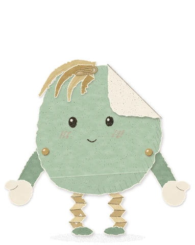
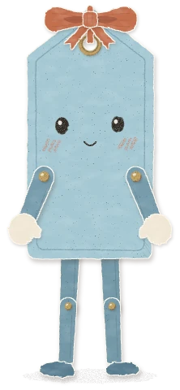
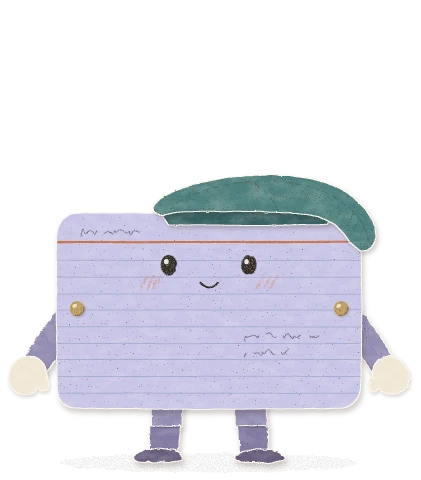
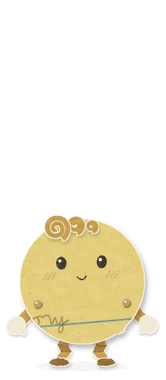
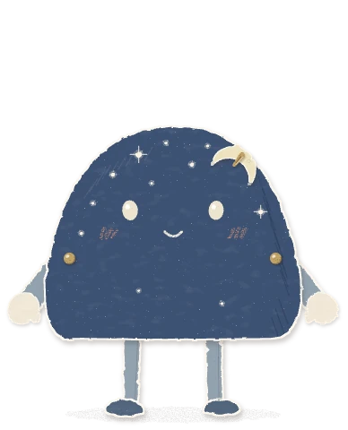

共振 Resonance 第二階段 第三輪
摺摺和它的四個朋友
你選了方向 C 的摺摺，請我們把肩膀放低、銅釘往內移、手臂縮短，頭上那一根看不出是什麼的東西改成頭髮或頭飾；再做大約五隻同一系列、身形和手腳長短各不相同的角色；最後設計首頁的動態：一次一到兩隻，從隨機的位置進來，做點事、和頁面上的東西互動，遇到彼此會互動，結束後走出畫面換別人，而且要比第二輪的示意小一點。
這一輪做了五隻（摺摺加四個新角色），每隻由一位子代理畫。畫完請三位評審看：一位看造型，一位看首頁動態，一位不讀任何說明、只看圖說第一印象。之後五位修改者各改一隻，另一位修首頁動態的引擎。首頁動態目前是原型，放在首頁的截圖上跑，還沒有放進網站，等你看過再決定。
摺摺：你說的四點
左邊是你選定的第二輪，右邊是第三輪，同一個比例。其他地方照第二輪：折角和底下的字、臉、三道腮紅、風琴腿、綠色腳、奶油色手套。
這張是第三輪初版。評審後又小改了四處：瀏海深一階、揮手的手再往外 7°、肚子上的舊摺痕往下移、折角下的字寫大一點（見下面摺摺 一段）。
肩膀往下 肩膀的銅釘從眼睛下方移到嘴巴下方（嘴下約 27，原本和腮紅同高），手臂從紙片還寬的地方伸出來。
如果你覺得太低，退路是再往上 10。
銅釘往內 銅釘釘在紙面上，離撕邊大約兩顆釘的寬度；手臂的紙條藏在紙後面，只從撕邊下伸出來，看起來是釘在紙上，不是釘在邊上。
手臂短一點 肩膀到手套從 164 縮到 120，垂下時手套剛好在紙片底緣，整隻看起來更圓。代價是手舉不過頭頂，五隻都一樣。
頭上換成瀏海 那根像耳朵又不是耳朵的紙舌拿掉，換成四綹往左撥的撕紙瀏海，用一根銅色迴紋針夾著，免得讀字時掉下來擋住。瀏海和腿是同一張麥黃紙。
一個系列，五種身形
五隻放在同一個比例。每隻是一種勞作桌上找得到的紙：撕下來的紙、禮物吊牌、索引卡、打洞的圓點、紙劇場的夜空布景。頭上都換成看得出是什麼的東西：瀏海、蝴蝶結、貝雷帽、捲髮、月亮髮夾。

摺摺 Tuck
牽牽 Twine
聆聆 Nod
點點 Pip
悄悄 Hush
評審後的版本，從同一組拆件組出來的靜止站姿。
日間首頁
夜間首頁
首頁上的高度：摺摺定在桌機 120 px（第二輪的示意約 200 px）、手機 80 px；其他角色依身高換算，但把差距壓小一點，所以牽牽不會比 QR 碼那一塊還高，點點也不會小到看不見。可以在下面的原型用「大小」滑桿試。
五隻共用的 白色纖維撕邊和往右下的膠水陰影、奶油色連指手套（有拇指）、黃銅兩腳釘關節、同一張鉛筆臉（豆豆眼、小嘴）和三道斜斜的腮紅。手臂一律從紙後面伸出來，銅釘離邊約兩到三顆釘；只有牽牽的手在前面，因為它要用雙手捧著紙條。
各自不同的 身形、紙材、頭上的東西、手腳長短、走路的樣子，還有一個招牌動作：摺摺掀開折角、牽牽轉身讓你看「給：」、聆聆脫帽打招呼、點點在故事卡上找自己原本那一頁、悄悄在頁尾睡著。沒有膚色、沒有脖子、沒有動物耳朵。
首頁動態原型
這是首頁現在的樣子（截圖），上面跑著真的動態。角色一次來一到兩隻，從畫面邊緣走進來、從卡片後面爬上來或探出頭，或在標題上冒出來；做幾件小事，再從進來的那邊離開，過幾秒換別人。兩隻碰到時會互相揮手、一起「共振」。可以在框裡捲動，看卡片區、行動呼籲和頁尾。
把滑鼠移到角色身上，它會看你、揮揮手；點一下會開心跳起來，再點一下就害羞地先走了。
「下一位」馬上請一隻進來，「讓兩隻相遇」直接看相遇。
可以切換桌機或手機、淺色或深色，用「大小」滑桿試大小。
「每秒 12 格」是紙偶定格動畫的感覺，「流暢」是一般動畫。
做的事，跟頁面上的東西有關
站在 QR 碼旁邊指給你看，靠在「瀏覽所有故事」按鈕上
坐在故事卡的上緣，腳垂在卡片前面；從卡片側邊探頭再縮回去
站在早期說故事的人那一排頭像尾端，像排進隊伍
拿一本小書翻頁；在小紙片上寫字，再遞向按鈕
各自的招牌：掀折角、轉身給你看「給：」、脫帽、找原本那一頁、在頁尾打盹
相遇
走得到對方：一個走過去，兩個先揮手，三道鉛筆波紋在中間一起跳、臉紅一下，再交換一張紙條或「碰碰手」，然後各走各的路
隔得遠（例如標題的兩端、App Store 徽章兩邊）：不走過去，轉向對方揮手，波紋在兩隻中間跳
首頁第一屏在模擬裡，12 次有 11 次在一分鐘內看得到一次相遇或遠遠打招呼
不打擾
只有紙片本身接收滑鼠，手腳和透明的地方不會擋住按鈕；模擬裡角色擋住點擊 0 次
不站在文字和按鈕上，不擋住卡片的作者那一行
分頁切走、角色捲出畫面就暫停
系統設定「減少動態」時，只有一隻安靜站在畫面裡，不會動
夜間模式時角色稍微調暗，不比頁面上的文字還亮
五個角色
每張概念圖都可以切到「評審前後」，看第一版和修改後並排。
摺摺 Tuck
一張被撕下來的鼠尾草綠紙。它一直折著一個角，因為折角底下藏著幾行字。它習慣把重要的東西收好，連瀏海都用迴紋針夾起來。
概念圖 概念圖 評審前後
個性 有點害羞、很認真，會把重要的東西好好收著；但它會先對你揮手。
招牌動作 右手繞到紙前面捏起折角，讓你看底下的字，過一兩秒再折回去。
在首頁 站在 QR 碼和下載徽章旁、靠著「瀏覽所有故事」、坐在故事卡上讀。
評審判定 保留。你說的四點都做到了；造型評審說這是系列裡最清楚落在紙面上的銅釘。
評審後改了
揮手的手再往外 7°，撕邊外露出一條紙，不是一個細楔形
瀏海深一階，和米白的折角分開（只看圖的評審說折角像第二個頭飾）
肚子上的舊摺痕往下移，不再和兩顆銅釘排成一條腰帶
折角下的字寫大、寫深，首頁大小也看得出是幾行字；掀角時手套到紙前面捏住折角
沒有改的，和原因
「圓形的紙沒有角可以折」：折角是你選的招牌，任何紙都能往前折一個角
腿和身體是不同的紙：刻意的，瀏海也撕自同一張麥黃紙，頭和腳互相呼應
肩膀、銅釘、手臂長度：照你的修改，沒有再動
牽牽 Twine
一張還沒綁到禮物上的霧藍色吊牌。背面寫著「給：」，後面空著，因為它還在找那個人。名字取自「牽線」「牽掛」：吊牌靠一條繩子牽在禮物上，它頭上的蝴蝶結就是自己的那條繩子。
概念圖 概念圖 評審前後
個性 溫和、有禮貌、有點拘謹。遞東西一定用雙手，打招呼前先微微鞠躬；緊張時會去整理蝴蝶結。
招牌動作 轉過身，讓你看背面的「給：」；雙手捧著一張折好的小紙條。
在首頁 用長腿沿著波浪大步走進來；手機上從「寫下你的故事」按鈕後面只探出頭和蝴蝶結。
評審判定 保留。身高 1.35 倍但很瘦，面積比摺摺還小；和摺摺一高一矮很好看。
評審後改了
轉到背面時不再有臉：背面只有「給：」，手和蝴蝶結在紙後面露出一點
肩膀銅釘往內 9，離邊約三顆釘；手套垂在身體下角旁邊，不再像抱著肚子
蝴蝶結綁正，兩個環扁一點、往外張，縮小後不再像兩個小耳朵；動的時候最多晃 8° 就回正中
臉往下 12，下半身不再一大片空白；腿寬一點，不像踩高蹺
沒有改的，和原因
身高：首頁上改成壓縮換算，桌機約 150 px，不用把吊牌改矮
赤陶色蝴蝶結：它在 48 px 還認得出牽牽，彩度已比網站的赤陶色低
手在身體前面：它要雙手捧紙條，銅釘已照「在前面就離邊三顆釘」
聆聆 Nod
一張從某人的卡片盒裡走出來的淡紫色索引卡。你說話的時候，它一邊點頭，一邊把重要的話記在格線上；聽到真正打動它的故事，整張卡會被字寫滿。
概念圖 概念圖 評審前後
個性 溫暖、穩重、很會聽。很少說話，用點頭、帽子和卡片上的字表達：聽得越投入，寫得越多。
招牌動作 右手套舉起來碰帽簷，脫帽打招呼；聽完一個故事，卡片寫滿字。
在首頁 坐在故事卡上點頭讀標題、在「寫下你的故事」旁招手、靠在「瀏覽所有故事」上；滑鼠靠近就脫帽。
評審判定 修改。第一版太大、帽子太大太暗，像快滑下來；縮小後過關。
評審後改了
整隻縮小：卡片 ×0.9，面積從摺摺的 1.5 倍降到 1.18 倍
貝雷帽小了將近一半、亮一點，帽緣壓在卡片頂邊上，右邊軟軟塌在卡角，看起來是戴著的，不是浮著
手臂改藏在卡片後面，銅釘離側邊 18 → 24；手沒有加長
臉保持原大小，所以在小一點的卡上看起來大一點；手寫字從四段減成三段
沒有改的，和原因
「像海綿寶寶、剪影像廂型車」：索引卡的剪影一定是長方形，靠帽子、格線和臉分開
寫滿字時臉還在：那是同一面寫滿了，不是背面
寬度停在 144 px（評審建議 135）：再窄手套就貼著卡片，看不出是手
點點 Pip
有人在黃色橫線筆記本上寫了一段故事，後來把那頁拿去打洞歸檔，「喀」一聲掉下一顆小圓點。它身上只裝得下一條橫線，和 story 最後的「…ry」。它是別人故事裡的一小片，所以對每個故事都很好奇。
概念圖 概念圖 評審前後
個性 精力充沛、坐不住，誰在附近就先跳過去打招呼；被稱讚太久會害羞。
招牌動作 站在故事卡上緣往下看標題，眨眨眼，臉左右滑一下（不是這頁），再跳到下一張。
在首頁 擠進早期說故事的人那一排頭像的尾端，在卡片之間跳來跳去。
評審判定 修改。兩位評審都說它太像黃色笑臉 emoji；第一版的捲髮縮小後像炸彈引信。
評審後改了
捲髮從站在頭頂改成貼在左上額頭、往前傾，縮小後是一撮捲毛，不再像引信或字母
臉往上 10，肚子上的橫線改成印刷的藍線、「…ry」深一點，離 🙂 的排法遠一點
紙色深一點、膠水陰影重一點：第一版在手機首頁的桃色色塊上幾乎看不見
手臂改藏在圓片後面，銅釘離邊約三顆釘
沒有改的，和原因
黃色：再深就變芥末色，和手腳黏在一起
手腳顏色和身體不同：手、腳、捲髮是同一條捲紙條，這是它的設定
比例 0.55 倍：首頁上壓縮換算後桌機約 77 px，不會小到看不見
悄悄 Hush
紙劇場的背景最上面是一片夜空，有人拿針在上面刺了星星，對著燈就會透光。悄悄是從那片夜空撕下來的一角，自己剪了一枚彎月別在頭上。它說話很小聲，好像怕吵醒誰。
概念圖 概念圖 評審前後
個性 安靜、動作慢、有點睏。白天眼皮比較重，晚上身上的星星透光，它才真的醒過來。
招牌動作 坐在頁尾靠著 Resonance 字標睡著，頭上冒幾個鉛筆 z，星星一明一滅。
在首頁 白天多在行動呼籲和頁尾出現，少待在最亮的首屏；夜間模式來得比較勤。
評審判定 修改。只看圖的評審最喜歡它；造型評審說白天的眼睛有點像幽靈。
評審後改了
眼睛換成暖白鉛筆塗實，不再是淡藍空心的眼睛；嘴畫粗、畫長一點，首頁大小也看得到笑
彎月收進圓頂裡，尖角朝內，剪影回到乾淨的圓頂，不再像一支小角
月亮外面那圈銅環（被看成天使光環）換成一支銅髮夾
身體亮一階、鞋底改成板岩藍，夜間首頁上不再融進背景；紙紋少一點，比較像紙、不像絨布
手臂改藏在圓頂後面，銅釘離撕邊約三顆釘
沒有改的，和原因
眼睛沒有黑瞳孔：深色紙上畫黑眼珠看不見，淺色的眼睛是夜空紙的鉛筆
寬圓頂、底邊剪直、針孔星星、慢慢走、在頁尾睡覺：兩位評審都要保留
三位評審怎麼說
他們看的是第一版；上面每隻的「評審後改了」就是回應。
造型評審
是一家人，也是五個人：48 px 的剪影五個都分得開。最喜歡摺摺和牽牽。
最大的問題：聆聆、點點、悄悄的手臂紙條壓在身體前面、跨過輪廓，銅釘又像釘在邊上，正是你對第二輪摺摺說的那件事。改成和摺摺一樣，手藏在紙後面。
太大的是聆聆的面積，不是牽牽的身高。
點點最接近現成的東西（黃色笑臉、Mr. Men）；悄悄的臉白天偏幽靈。
首頁動態評審
引擎很穩，平均每格不到 0.3 毫秒；探頭、坐在卡片上、頁尾打盹、手機上牽牽從按鈕後探頭都好看。
兩隻會搶同一個位置疊在一起；離開時後面那隻會穿過前面那隻。
手腳的透明處會擋住按鈕的點擊。
首屏很少看到相遇：相遇點都在第一屏下面。所以加了「遠遠打招呼」。
大小：桌機 120 剛好，手機可以再小，系列的高矮差距要壓小。
以上都修好了，修好後的數字在「首頁動態原型」一段。
只看圖的第一印象
家族感很強，像日韓文具角色的溫度，也有紙藝遊戲的手感；五種身形不會撞形。最喜歡悄悄：「唯一一個不只是長了臉的文具，而是讓人想知道它有什麼故事的角色」。概念最清楚的是牽牽，一張要送給某人的吊牌。
它覺得摺摺最不像一家人：其他四隻是邊緣平整的紙片，只有摺摺是撕過、有毛邊、頭上是真的頭髮。
五張臉一樣，小尺寸時靠頭飾分辨，頭飾縮小後容易壞掉。
我們的建議
五隻都留，但上線時先放三隻：摺摺、牽牽、悄悄。這三隻在三位評審那裡都最穩，一高一圓一深，首頁上也最好分。聆聆和點點等你看過修改版再決定。
需要你決定的事
五隻裡留哪幾隻？上線時要一次放五隻，還是先放三隻？
大小：桌機摺摺 120 px、手機 80 px 合適嗎？原型的「大小」滑桿可以從 60% 試到 160%。
點點像不像黃色笑臉？修改後已經拉開一點；如果你還是覺得像，可以換一種紙（例如郵票、標籤貼紙）。
摺摺要不要和其他四隻更像一家？只看圖的評審覺得摺摺的撕邊和頭髮讓它像外人；另一個看法是摺摺是主角，本來就可以特別一點。我們傾向不動摺摺。
首頁動態的節奏：每隻待 9 到 16 秒，中間空 3 到 7 秒，同時最多兩隻。會太熱鬧嗎？
可以把動態放進真的首頁嗎？放進去時會改用頁面元素的真實位置（不是截圖）、角色只在首頁出現、尊重「減少動態」設定，並在真的手機上測過。這個原型還沒在真的手機上測。